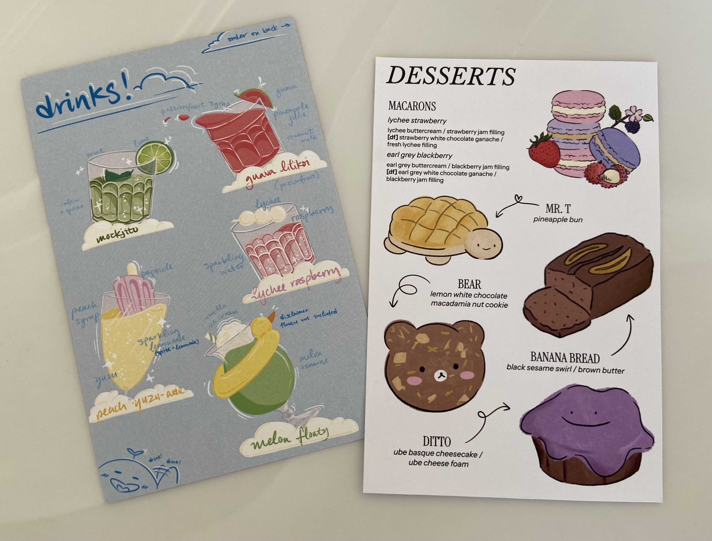
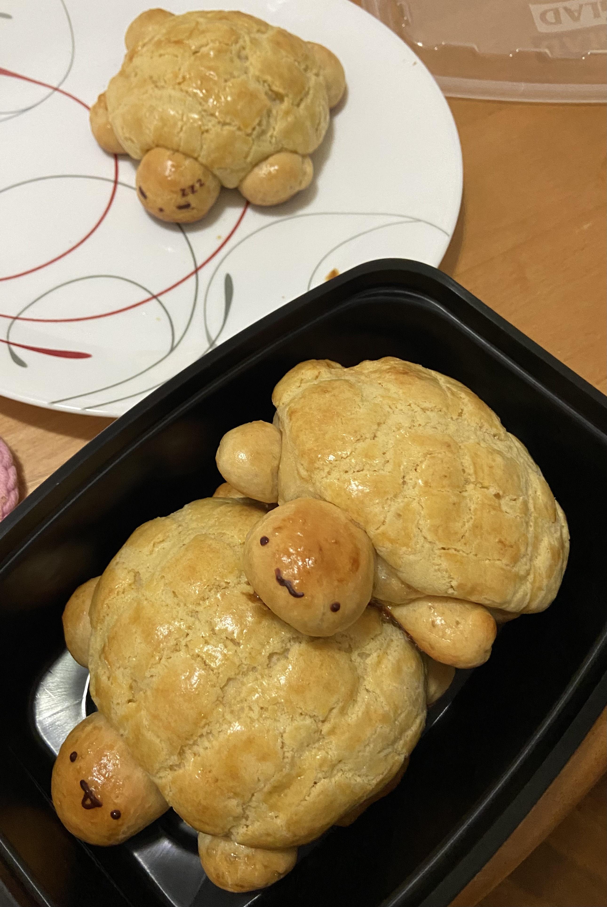
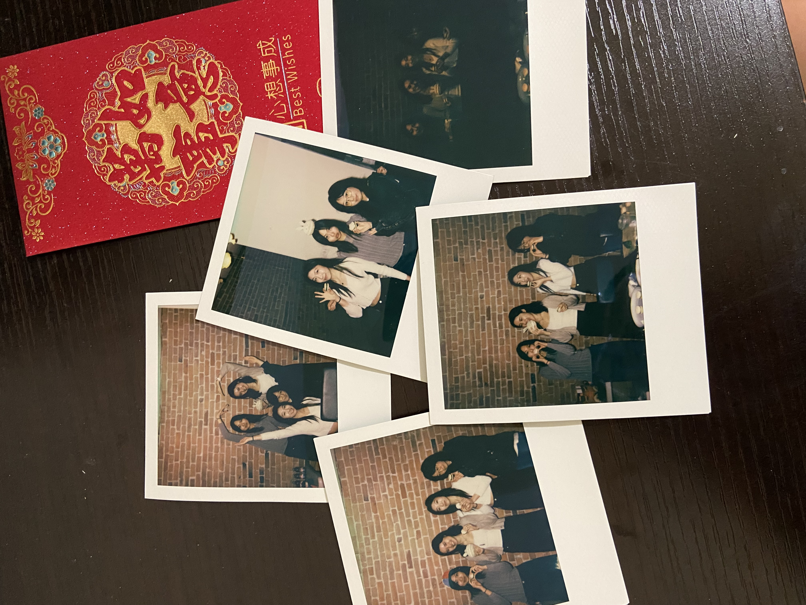
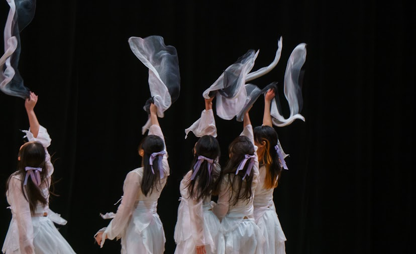

My academic interests lie at the intersection of data science and medicine — specifically immunology and oncology. From modeling genetic and environmental influences on human health to exploring how machine learning can assist in drug discovery, I’m constantly excited at the potential of CS + science + medicine.
Outside of academics, I love exploring creative outlets. I love baking and hosting home cafes for friends, and also enjoy cafe hopping in new cities. I’m also into photography — particularly using old digital cameras and Polaroids to capture little moments with friends. I also dance, with a background in both Chinese traditional and contemporary dance.
   